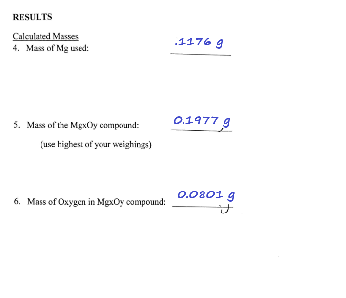
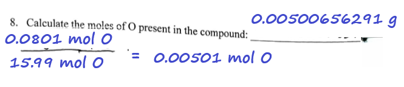
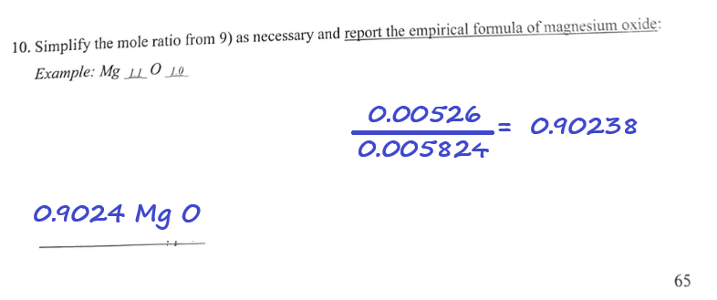
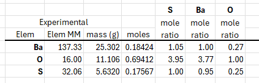

Preparing Better Lab Reports
This is not the complete guide to lab report preparation, or else it would be titled something like Mastering The Chemistry Lab Report.
This is more of a Dont's
and not a Do's
document for the moment.
These are things I have noticed students doing that they should not do or things
they should to make it better.
This document was created based on recent evaluations of lab reports and hopefully this is a way that can improve the reports being submitted.
Some of the students' experiments have been complicated by getting incorrect mass readings. An example is when a group is asked to get the mass reading of an empty container (Reading #1) and later to get another mass reading (Reading #2) of the container with important sample inside. When Reading #2 is subtracted with value of Reading #1, the number is actually negative! Since masses cannot be less than zero, what happened?
To be certain of Reading #2, the students read the mass maybe once or twice or three times, and those multiple readings continue to agree with each other with only the small expected variation. The students now have to wonder that it was Reading #1 that was wrong, and they wished they had taken that reading more than once, which can not be done now that the sample is in the container. (Actually there can be ways to recover.)
What the students are doing in this activity is realizing that perhaps instruments that seem very sophisticated like an electronic balance should probably not be read just once, particularly if the reading is not to be an approximate mass, but rather one recorded on a data line that will be significant in experimental calculations.
And this is a good thing and something generally that experienced, professional scientists do. They take an instrumental reading multiple times on a critical sample to be very sure of the value of the property of that sample (in this case, mass). They especially take multiple readings on the instrument if they are concerned that the instrument might not be performing optimally, or if there is a question that it might be out of calibration, or that it has been some time since the last maintenance operation or inspection.
So if you have any doubt about your reading, or you want to sure that you have an excellent mass reading on a critical sample, this is a suggestion for you on procedure for using a balance to get a mass:
If the difference is 1% or less, the balance can be assumed to be highly reproducible and be used with confidence. Note it is not always necessary to take triplicate readings of masses unless the chemist might be determining a very critical measurement. The above procedure is only done periodically to ensure instruments are operating in an expected manner.
This laboratory session involved heating magnesium (Mg) metal ribbon pieces so they would react with atmospheric oxygen in the following reaction. The reaction is: 2 Mg (s) + O2 (g) → 2 MgO (s)
No Work Shown on CalculationsPart of The Report
In the course of the experiment, students must record the mass of the container itself (empty), then of the magnesium in the container (the starting reactant), then of the product that forms in the container. (These data are not shown in the image below. The image was edited to change from the handwriting of the student to machine-based chracter lettering, but is a facsimile of the entered data.) 
Then it is time for the calculations, which are shown in the form above.
Notice that there seems to be a lot of vacant real estate in the spaces between items numbered 4, 5, and 6?
Well there really shouldn't be. This space is for messy calculations
,
the area where students show their work and thinking in writing.
It's a bit clear that the students need instruction or guidance on how
to fill that space.
So an instruction will be added to the lab manual exhorting students to show their work, to write out their calculations. Perhaps it will be added as preface to the lab manual, with the further incentive that if the student's out-of-nowhere value is found to be in error, they will lose more points on that item in the lab report than if they had shown their work, in which case, far fewer points are deducted.
In case students are under the impression that professional level career chemists with years of experiment in the lab coats never write out their calculations—even the most basic operations in math used in chemistry—they would be wrong in that thinking. Good chemists actually do fill up their lab books with that detail because a quick glance generally stops them from having to wonder how a certain quantity came to appear seemingly out of nowhere.
When one sees a calcuation like below—which actually has the correct answer—this is the kind of finding that is most disturbing. Because this report has students working in partners as groups of two, it seems clear that the partner knew what was going on but the understanding did not catch up with the student.  The calculation was determine the mole amount of the element oxygen that was formed in the MgO product using oxygen's molar mass. The quotient shows a dividend in moles and it should be in grams, and while the divisor value of 15.99 is generally correct for oxygen's molar mass, the units should be g/mol. The result has the correct units, but the student's understanding of math in chemistry should have shown that the units would cancel and the resulting value would be dimensionless, which of course would be an unwanted result.
The calculation would more properly look iike a product yielding the wanted result
\[ 0.0801 \text{ g O} \times \frac{1 \text{ mol O}}{16.00 \text{ g O}} = 0.00500625 \text{ mol O} \]
Note quite carefully how the expression is written. The molar mass value like any conversion factor is written in numerator-denominator style as a factor of a product expression, as all expressions and equations should be written. This makes it easy to see how the expression is evaluated and how the units would cancel properly without necessarily having to show the cancel operation as below.
\[ 0.0801 \cancel{\text{ g O}} \times \frac{1 \text{ mol O}}{16.00 \cancel{\text{ g O}}} = 0.00500625 \text{ mol O} \]
It should be noted that the student was instructed not to be concerned with significant digits with the use of that value as an intermediate in subsequent calculations. This was an incorrect instruction actually. If an intermediate result in a series of calculations is to be obtained, that intermediate result should be presented with the correct precision, that is, taking into account significant digits. But that precision-determined result would not be used in subsequent steps. So the correct reporting of the result would be 0.00501 mol or \( 5.01 \times 10^{-3} \text{ mol}\). In fact conversion of any final calculated result to scientific notation since it actually help the student to evaluate better what the precision is (significant digits are). The student can then elect to convert the result back to standard notation.
Since the laboratory experiment was set up to show how empirical formula, it is important to understand the math and apply it correctly.
Students were told to find the calculated mole value for all the elements
in the compound. Then they were to use the lowest (or smallest
, howver
one prefers) of values as a divisor for all the mole values (as dividends)
of the elements of the compound, including the mole value chosen to be
the divisor. (This would result in value of 1 for the operation.)
The results for all the other values should be quotients greater than 1. Did the students understand why they were performing this calculation in this way? The lab report below shows that there was a failure to help the student understand the concept.

Perhaps it be explained with the following example.
Suppose an unknown compound having a 50.0 g total mass is found by elemental analysis to be 25.302 g barium (Ba), 11.106 g oxygen (O), and 5.6320 g sulfur (S). The sheet below then shows the calculations for determining the empirical formula.

The moles calculation column showed that sulfur had the lowest mole value. Look at the column S mole ratio: when all the mole values are divided by the moles of S, all the values are greater than 1.00. This is how the calculation should be. The empirical formula Ba1.05S1.00O3.95 is obtained, which is close the actual formula for what looks like barium sulfate, BaSO4.
Now suppose instead of dividing by the lowest mole value which is sulfur (S), one elects to divide by oxygen (O), the values shown in the O mole ratio column. That results in a formula of Ba0.27S0.25O1.00. Chemical formulas are about whole numbers of atoms, not fractions of an atom, so trying to determine whole numbers of atoms in this way is unproductive. One soon realizes that all the values as subscripts of atoms would have to be multiplied by 4 to obtain the sensible whole number values. And so this is why the process involves dividing by the smallest of the mole values from the experimental determinations.